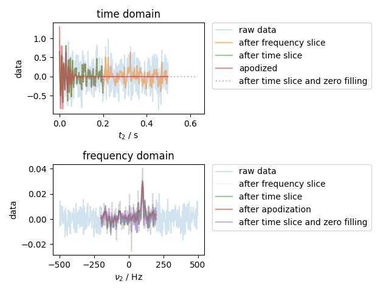

Note
Go to the end to download the full example code
Basic Slicing/Filtering Example¶
Here we demonstrate both the coordinate-based slicing notatation, which is unique to pySpecData, as well the way in which the axis coordinates for a Fourier transform are handled automatically. We also show how to make a new data object based on the axis coordinates of an existing object – e.g., to create an apodization filter (as here) or to apply a frequency-dependent phase shift.
The case considered here is that of an NMR FID that has been acquired with a wider spectral width than the signal of interest, and with a longer acquisition time. As we select an apply filters/apodization to throw out the noise outside the bandwidth and time range of the signal, the SNR of the signal improves.
note that the original dwell time is 0.001 and the original frequency resolution is 2.0
note that the new dwell time of the truncated data is 0.0024875621890547263 and the new frequency resolution is 4.962962962962963
from pylab import *
from pyspecdata import *
fig, (ax_time, ax_freq) = subplots(2,1)
t = nddata(r_[0:0.5:1e-3], 't2') # 1 kHz SW with a freq. resolution of 1/0.5=2 Hz
fake_data = exp(1j*2*pi*100*t-10*t*pi) # 10 Hz wide line at 100 Hz offset
fake_data.add_noise(0.3).set_units('t2','s')
plot(fake_data, ax=ax_time, alpha=0.2, label='raw data')
ax_time.set_title("time domain")
ax_freq.set_title("frequency domain")
fake_data.ft('t2', shift=True)
assert fake_data.get_ft_prop('t2','dt') == 1e-3
print("note that the original dwell time is",fake_data.get_ft_prop('t2','dt'),
"and the original frequency resolution is",fake_data.get_ft_prop('t2','df'))
plot(fake_data, ax=ax_freq, alpha=0.2, label='raw data')
fig.tight_layout()
fake_data = fake_data['t2':(-200,200)] # filter the data in the frequency domain by slicing from -200 to 200 Hz
plot(fake_data, ':', ax=ax_freq, alpha=0.2, label='after frequency slice')
fake_data.ift('t2') # now, move back into the time domain, where it will have less noise, and with less points
plot(fake_data, ax=ax_time, alpha=0.5, label='after frequency slice')
# in the time domain, we can either slice simply:
truncated_data = fake_data['t2':(0,0.2)]
plot(truncated_data, ax=ax_time, alpha=0.5, label='after time slice')
# or we can implement a matched filter:
fake_data *= 2*exp(-10*pi*fake_data.fromaxis('t2'))
plot(fake_data, ax=ax_time, alpha=0.5, label='apodized')
truncated_data.ft('t2') # note that after we ft the first time, it "remembers"
# whether or not we have frequency shifted, and will
# use the existing start point in the frequency domain
fake_data.ft('t2')
plot(truncated_data, ax=ax_freq, alpha=0.5, label='after time slice')
plot(fake_data, ax=ax_freq, alpha=0.5, label='after apodization')
print("note that the new dwell time of the truncated data is",truncated_data.get_ft_prop('t2','dt'),
"and the new frequency resolution is",truncated_data.get_ft_prop('t2','df'))
# finally, show that we can zero fill
truncated_data.ift('t2')
truncated_data.ft('t2', pad=256)
plot(truncated_data, ax=ax_freq, alpha=0.5, label='after time slice and zero filling')
truncated_data.ift('t2')
plot(truncated_data, ':', ax=ax_time, alpha=0.5, label='after time slice and zero filling')
ax_time.legend(**dict(bbox_to_anchor=(1.05,1), loc=2, borderaxespad=0.))
ax_freq.legend(**dict(bbox_to_anchor=(1.05,1), loc=2, borderaxespad=0.))
fig.tight_layout()
show()
Total running time of the script: (0 minutes 0.556 seconds)